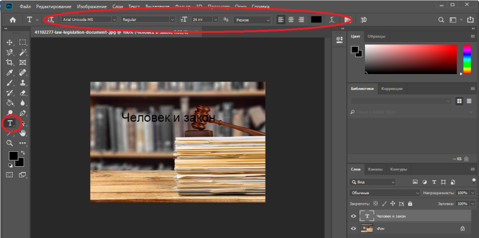
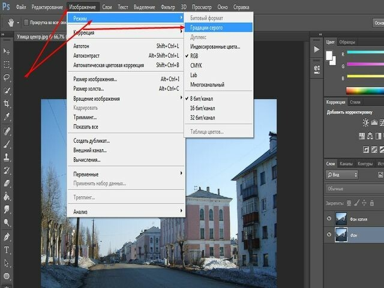

Как сделать текст в Photoshopе
Рекламные баннеры в интернете создаются и обрабатываются известным графическим редактором Photoshop. Праздничная или поздравительная открытка, продающая графика или объявление – маркетинговые инструменты требуют наличия текста для призыва целевой аудитории выполнить конкретное действие. В этой связи маркетологи применяют инструменты создания и редактирования текста в Photoshop. Разберем, как воспользоваться полезной функцией.
| Как вставить стандартный текст ↓ | Инструмент – Деформировать текст ↓ | |
| Инструменты 3D эффекта ↓ | Золотой эффект текста ↓ | |
Вставка стандартного текста в Photoshop
Для начала потребуется открыть программу Photoshop и загрузить соответствующую картинку, которая подлежит обработке текстом. Обратим внимание на панель инструментов с левой стороны, где нажимаем на значок «Т» — активируются текстовые инструменты. При нажатии правой кнопкой мыши по значку откроется доступ к выбору стиля написания текстовой информации: с ориентацией по горизонтали, вертикали или маска. Определяем место, куда поместим текст и нажимаем левой кнопкой мыши по изображению. Верхняя панель инструментов содержит доступные шрифты, размеры и выравнивание текста.
При добавлении новых шрифтов в Photoshop скачиваем и перекидываем файлы в папку на ПК «Шрифты». Программа автоматически определить добавленные варианты. Для изменения цвета текста нажимаем на квадрат в верхней панели инструментов и Подбираем цветовой оттенок. С помощью правого окна дизайнер регулирует оттенки текста перемещением кружка.

{kind=link}
Инструмент – Деформировать текст
Чтобы придать неповторимый облик тексту, воспользуемся инструментом деформация, которая находится в верхней части панели с инструментами и обозначается символом «Т», подчеркнутым дугой.
После добавления надписи на изображение, выделяем и нажимаем на указанный значок. Далее, доступные эффекты отобразятся списком. Возможность сделать дугу, арку, рыбий глаз и прочие варианты придаст тексту свою изюминку.
{kind=link}
Инструменты 3D эффекта в Photoshop
Объемные надписи создают дополнительный эффект при прочтении и просмотре баннера. Чтобы воспользоваться инструментом 3D эффекта, применим следующую инструкцию.
1. После добавления текста открываем текстовый слой без выделения.
2. В верхней панели инструментов нажимаем на кнопку «3D-режим».
3. Затем, воспользуемся полезным меню «Новая сетка из градаций серого».

{kind=link}
4. После чего для преобразования слов воспользуемся параметром «Новая структура из слоя». Функция также изменяет цвет текста, тени, добавляет обводку, уровень света место расположения относительно фонового изображения.
{kind=link}
Золотой эффект текста в Photoshop
Разберем возможность графического редактора на практическом примере. Для формирования золотой надписи воспользуемся следующей инструкцией.
1. Загрузит фон из интернета и создать новый документ в Photoshop, размеры которого – 1900*950.
2. Открыть меню «Файл» и нажать на кнопку «Поместить связанные». Для соответствия размерам созданного проекта в Photoshop присутствует возможность преобразования скаченного изображения в смарт-объект. Нажимаем правой кнопкой мыши на картинку и нажимаем на функцию «Преобразовать в смарт-объект».
{kind=link}
3. Для установки сочности переходим в меню «Изображение» — «Коррекция» с установкой параметра на «-20».
4. В разделе слои переходим в стили слоев и нажимаем на функцию «Наложение цвета». В открывшемся окне Подбираем настройки режима наложения «Умножение».
Базовые настройки готовы – переходим к созданию эффектной текстовой надписи в Photoshop. После выбора инструмента «Текст» зажимаем клавишу на клавиатуре «Caps Lock» и останавливаемся на шрифте «Big Bottom Cartoon» с параметрами 250 пт и Трекинг на 70. Текстовый слой дублируется с помощью нажатия сочетания клавиш «Ctrl+J». Переходим в оригинальный слой, открываем «Стиль слоя» и выставляем параметры тени на – «Непрозрачность»-30%, «Смещение»-10, «Размер»-8. Дублируем слой с установкой следующих параметров — «Непрозрачность»-45%, «Смещение»-34, «Размер»-45.
Копируем оригинальный текстовый слой. Правой кнопкой мыши нажимаем по скопированному тексту и вставляем стиль. Оригинальный слой заливаем «0». Для добавления блеска разделяем слои с применением параметра фаски и тиснения — размер 4, подвеска – линейный свет, тень – затемнение базы, непрозрачность – 13%. Далее, устанавливаем контур-полукруг и сглаживание. Внутреннюю тень настраиваем следующим образом — Внутреннюю тень делаем с настройками: наложение – линейный затенитель, непрозрачность – 10%, смещение -1, размер – 8.
После этого остается только выбрать узор Glitter Pattern 02 с масштабом 50%. Результат смотрим ниже. Отныне известно, как добавить текст в Photoshop с применением элементов дизайна.
{kind=link}
Чтобы не тратить время на создание оригинальных надписей, скачиваем уже готовые разработки с интернета. В Photoshopе можно изменить текст, выбрав наиболее подходящие параметры.